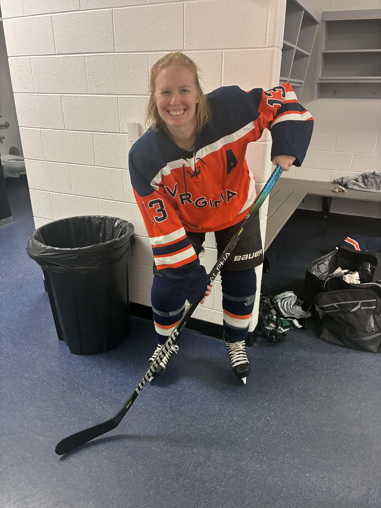

A Strategic Launch for Every Kind of Thinker
From hands-on builders to unique learners, we provide the playbook for a confident and independent college launch.
Move from the Sidelines to the Stands
Your student's college journey is about more than an acceptance letter.
It's about the confidence to thrive once the game begins.
By putting the strategy in your student's hands, we remove the administrative friction from your home.
I'll be on the bench coaching the playbook while you return to your favorite role: the fan in the stands watching them win.
A Professional Advantage for
the Way They Think
Pass 2 Success turns a student's unique processing style into a career-ready asset.
By combining 20 years of admissions expertise with the Neurodevelopmental Model (NDM) and technical program vetting, I ensure they don't just get into college-they graduate self-reliant and ready for the real world.

The Strategic Assist Philosophy
My mission is to provide every student with the tools they need to turn their unique way of thinking into a professional advantage. We don't just measure value by an acceptance letter. We measure it by the successful, independent life that comes after graduation.
The Pass:
Why I do this
The Assist: In hockey, the player who sets up the goal is credited with the assist. They provide the vision and the perfect pass so the scorer can finish the play. At Pass 2 Success, I am that teammate for your student. I provide the technical playbook. Your student is the one on the ice taking the shot.
The Shift: This philosophy was born from my years on the ice and my two decades in the college admissions world. I realized that the college process should not be a source of household friction. It should be a training ground for independence.
The Goal: When the administrative pressure is removed from your home, the dynamic changes. I coach the strategy from the bench. You return to the stands as a fan. Together, we ensure your student launches into a successful, independent life.
Why Work With Libby?
Vetted Professional Standards
I am a member of HECA, IECA, SACAC, and NACAC. These memberships require rigorous ethical standards and first-hand campus visits to ensure every recommendation I make is personally evaluated. [I will get you the logos for each one]
The NDM Advantage
As an NDM Practitioner with a Master's in Sport and Exercise Psychology, I apply the Neurodevelopmental Model to help unique thinkers build the mental resilience required for high-stakes university life.
Admissions Liaison Experience
I provide insider knowledge of Engineering and LD departments. I understand the specific departmental requirements that lead to a successful launch and a professional degree.
14 Years of Proven Results
With over a decade of success in Atlanta and nationwide, I have spent 14 years mastering the bridge between high school preparation and career-ready independence.